가스기사 (2004-05-23 기출문제)
1과목: 가스유체역학
1. 유체 흐름에 있어서 전단응력에 대한 속도구배의 관계가 그림과 같이 표시되는 유체의 종류는?
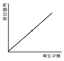
- 뉴톤유체(Newtonian fluid)
- 빙햄유체(BinghamPlastic fluid)
- 의소성유체(Pseudoplastic fluid)
- 팽창유체(dilatant fluid)
(정답률: 43%)

2. 비중량이 1.22kgf/m3이고, 동점성 계수가 0.15×10-4 m2/sec 인 건조한 공기의 점성계수는?
- 1.98×10-4 poise
- 1.26×10-4 poise
- 1.87×10-6 poise
- 1.83×10-4 poise
(정답률: 60%)
3. 비압축성 유체가 원형관에서 난류로 흐를 때 마찰계수와 레이놀즈수의 관계는? (단, Re=3×103∼105 이내 일 때)
- 마찰계수는 레이놀즈수에 비례 한다.
- 마찰계수는 레이놀즈수에 반비례 한다.
- 마찰계수는 레이놀즈수의 1/4승에 비례 한다.
- 마찰계수는 레이놀즈수의 1/4승에 반비례 한다.
(정답률: 알수없음)
4. 정체온도 Ts, 임계온도 Tc, 비열비(Cp/Cv)를 k라 하면 이들의 관계를 옳게 나타낸 것은?
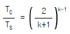
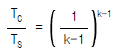
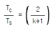
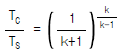
(정답률: 알수없음)
5. 압력 140kPa abs, 온도 5℃의 질소 2kg을 단열과정으로 300kPa abs 까지 압축시켰다. 압축 후의 온도는? (단, 질소의 비열비 k=1.4이다.)
- 72.6℃
- 82.6℃
- 92.6℃
- 102.6℃
(정답률: 알수없음)
6. 일정한 유량의 물이 원관에 층류로 흐를 때 지름을 2배로하면 손실수두는 몇 배가 되는가?
- 1/4
- 1/8
- 1/16
- 1/32
(정답률: 67%)
7. 유체 수송 기계 중 주로 비압축성 유체의 수송에 쓰이는 기계는?
- 압축기(Compressor)
- 송풍기(Blower)
- 팬(Fan)
- 펌프(Pump)
(정답률: 47%)
8. 기체의 온도와 점도의 관계는 다음 식으로 표시하는데 일반적인 근사값인 n 값의 범위는? (단, μ = 절대온도 T에서의 점도, μO = 0℃에서의 점도)
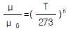
- 0 ~ 0.48
- 0.35 ~ 0.52
- 0.65 ~ 1.0
- 1.02 ~ 1.70
(정답률: 37%)
9. 다음은 Navier - Stokes 식을 나타내고 있다.
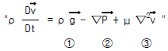
유체의 밀도가 일정하고 점도가 0 일 때 윗 식에서 생략할 수 있는 것은?- ①항
- ②항
- ②,③항
- ③항
(정답률: 53%)
10. 등엔트로피 과정이란 어떤 과정 인가?
- 가역 단열 과정 이다.
- 비가역 등온 과정 이다.
- 수축과 확대 과정 이다.
- 마찰이 있는 가역적 과정 이다.
(정답률: 알수없음)
11. 압축성 유체에 대한 에너지방정식에서 고려해 주지 않아도 되는 변수는?
- 위치에너지
- 내부에너지
- 엔트로피
- 엔탈피
(정답률: 65%)
12. 수직 충격파가 발생했을 때 나타나는 현상이 아닌 것은?
- 온도가 증가한다.
- 속도가 증가한다.
- 압력이 증가한다.
- 엔트로피가 증가한다.
(정답률: 46%)
13. 도관 단면의 급격한 팽창에 따른 마찰손실(Fe)을 나타내는 식은? (단, Ke는 확대손실계수, Va는 도관 상류에서의 평균유속, Vb는 도관하류에서의 평균유속이다.)
- Ke (Va/2gc)
- Ke (Vb/2gc)
- Ke (Va2/2gc)
- Ke (Vb2/2gc)
(정답률: 알수없음)
14. 유체역학에서 베르누이 정리가 적용되는 조건이 아닌 것은?
- 적용되는 임의의 두 점은 같은 유선상에 있다.
- 정상상태의 흐름이다.
- 마찰이 없는 흐름이다.
- 유체흐름 중 내부에너지 손실이 있는 흐름이다.
(정답률: 80%)
15. 기체수송용 압축기에서 최대사용압력이 높은 것부터 순서대로 된 것은?
- 원심압축기＞왕복압축기＞회전압축기
- 회전압축기＞원심압축기＞왕복압축기
- 왕복압축기＞원심압축기＞회전압축기
- 원심압축기＞회전압축기＞왕복압축기
(정답률: 알수없음)
16. 캐비테이션 현상의 방지 방법으로 가장 옳은 것은?
- 펌프의 설치 위치를 낮춘다.
- 실린더 라이너의 외부를 냉각한다.
- 서어지 탱크를 설치해 준다.
- 흡입비속도를 높여준다.
(정답률: 54%)
17. 마하각 α 를 속도 V와 음속 C및 마하수 M으로 옳게 표현한 것은?
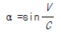
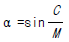
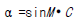
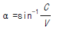
(정답률: 알수없음)
18. 압력의 차원을 절대단위계로 바르게 나타낸 것은?
- MLT-2
- ML-1T2
- ML-2T-2
- ML-1T-2
(정답률: 알수없음)
19. 지름이 d 이고, 구형방울 안과 밖의 압력차가 △p 인 물방울의 표면 장력(σ)을 옳게 나타낸 것은?
- △pd / 4
- △p / π d
- π d / 4△p
- △pd / 2
(정답률: 알수없음)
20. 곡률 반경이 10cm, 내경이 5cm 인 90° 엘보우에 유속 3m/sec 로 물이 흐를 때 곡관에 의한 손실 수두(H)는? (단, 저항계수 k= 0.48)
- 0.12m
- 0.22m
- 0.29m
- 0.34m
(정답률: 알수없음)
2과목: 연소공학
21. 298.15K, 0.1 MPa 상태의 일산화탄소(CO)를 같은 온도의 이론 공기량으로 정상유동 과정으로 연소시킬 때 생성물의 단열화염온도는 약 몇 K 인가? (단, 이 조건에서 CO 및 CO2의 형성엔탈피는 각각 -11⑤29kJ/kmol, -393522kJ/kmol 이고, CO2의 기준상태에서 각각의 온도까지 엔탈피 차는 4800K에서 266500kJ/kmol, 5000K에서 279295kJ/kmol, 5200K에서 292123kJ/kmol 이다.)
- 4935
- 5⑤8
- 5094
- 5123
(정답률: 알수없음)
22. 수소(H2)가 완전연소 할 때의 고발열량(Hh)과 저발열량(HL)의 차는 몇 kJ/kmol 인가 ? (단, 물의 증발열은 273K, 포화상태에서 2501.6 kJ/kg 이다.)
- 40240
- 42410
- 44320
- 45069
(정답률: 36%)
23. 기체 터어빈 장치의 이상 싸이클을 Brayton 싸이클이라고도 한다. 이 싸이클의 효율을 증대 시킬수 있는 방법이 아닌 것은?
- 터어빈에 다단팽창을 이용한다.
- 기관에 부딪치는 공기가 운동 에너지를 갖게 되므로 압력이 확산기에서 증가된다.
- 터어빈을 나가는 연소 기체류와 압축기를 나가는 공기류 사이에 열교환기의 설치한다.
- 공기를 압축하는데 필요한 일은 압축과정을 몇 단계로 나누고, 각 단 사이에 중간 냉각기를 설치한다.
(정답률: 54%)
24. 화학적 폭발과 관계 없는 것은 ?
- 분해
- 연소
- 산화
- 파열
(정답률: 80%)
25. 액체연료가 증발하여 증기를 형성한 후 증기와 공기가 혼합하여 연소하는 과정에 관한 사항 중 옳은 것은?
- 주로 공업적으로 연소 시킬때 이용된다.
- 이 전체 과정을 확산(Diffusion)연소라 한다.
- 예혼합기연소에 비해 반응대가 넓고, 탄화수소연료에서는 Soot를 생성한다.
- 이 과정에서 연료에 증발속도가 연소의 속도보다 빠른 경우 불완전연소가 된다.
(정답률: 50%)
26. 다음 중 가연성가스와 공기가 혼합되었을 때 폭굉범위는 어떻게 되는가?
- 일반적으로 폭발범위의 값과 동일하다.
- 일반적으로 가연성가스의 폭발상한계값보다 크다.
- 일반적으로 가연성가스의 폭발하한계값보다 작아진다.
- 일반적으로 가연성가스의 폭발하한계와 상한계값 사이에 존재한다.
(정답률: 60%)
27. 과잉공기량이 지나치게 많으면 나타나는 현상 중 틀린 것은?
- 배기가스 온도의 상승
- 연료 소비량 증가
- 연소실 온도 저하
- 배기가스에 의한 열손실
(정답률: 알수없음)
28. 다음 중 액체연료의 연소형태가 아닌 것은?
- 액면연소
- 분해연소
- 분무연소
- 등심연소
(정답률: 알수없음)
29. 다음 중 랭킨사이클(Rankine cycle)에 대한 설명으로 옳지 않은 것은?
- 증기기관의 기본사이클로 상의 변화를 가진다.
- 두개의 단열변화와 두개의 등압변화로 이루어져있다.
- 열효율을 높이려면 배압을 높게 하되 초온 및 초압은 낮춘다.
- 단열압축→ 정압가열→ 단열팽창→ 정압냉각의 과정으로 되어있다.
(정답률: 알수없음)
30. 카르노싸이클(carnot cycle)의 열효율 η 를 공급열량 Q1과 방출열량 Q2의 관계로 표시할때 바르게 된 것은 ?
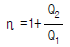
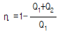
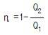
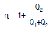
(정답률: 58%)
31. 24000kcal/m3의 LP가스 1m3에 공기 3m3을 혼합하여 희석하였을 때 혼합기체 1m3당 발열량은 몇 kcal/m3 인가?
- 6000kcal/m3
- 7000kcal/m3
- 8000kcal/m3
- 9000kcal/m3
(정답률: 82%)
32. 폭굉(detonation)에 대한 설명 중 맞는 것은?
- 긴관에서 연소파가 갑자기 전해지는 현상이다.
- 관내에서 연소파가 일정거리 진행 후 급격히 연소속도가 증가하는 현상이다.
- 연소에 따라 공급된 에너지에 의해 불규칙한 온도범위에서 연소파가 진행되는 현상이다.
- 충격파의 면(面)에 저온이 발생해 혼합기체가 급격히 연소하는 현상이다.
(정답률: 46%)
33. 아래의 방정식은 기체 1 ㏖ 에 대한 반데르 발스(Van derWaals)의 방정식을 표현한 것이다. n-㏖에 대한 방정식을 올바르게 나타낸 것은?
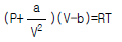
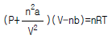
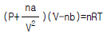
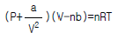
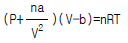
(정답률: 37%)
34. 다음중 비엔트로피의 단위는?
- kJ/kg.m
- kg/kJ.K
- kJ/kPa
- kJ/kg.K
(정답률: 73%)
35. 가연성 가스의 폭발범위의 설명으로 틀린 것은?
- 일반적으로 압력이 높을수록 폭발범위는 넓어진다.
- 가연성 혼합가스의 폭발범위는 고압에 있어서 상압에 비해 훨씬 넓어진다.
- 프로판과 공기의 혼합가스에 불연성가스를 첨가하는 경우 폭발범위는 넓어진다.
- 수소와 공기의 혼합가스는 고온에 있어서 폭발범위가 상온에 비해 훨씬 넓어진다.
(정답률: 알수없음)
36. 탄소 62%, 수소 20%를 함유한 연료 100㎏을 완전 연소시키는데 필요한 이론 공기량은 몇 ㎏이 필요한가?(단 공기 평균분자량은 29g 이다.)
- 620
- 1000
- 1404
- 1724
(정답률: 59%)
37. 압력 엔탈피선도에서 등엔트로피선의 기울기는?
- 체적
- 온도
- 밀도
- 압력
(정답률: 70%)
38. 연소시 공기비가 적을 경우 미치는 영향은?
- 매연 발생이 심하다.
- 연소실 내의 연소온도가 낮아진다.
- 미연소가스 중 SO3의 함유량이 많다.
- 연소가스 중에 NO2의 발생으로 저온부식이 촉진한다.
(정답률: 50%)
39. 아래 그림은 일반적인 수증기 싸이클에 대한 엔트로피와 온도와의 관계 그림이다. 각 단계에 대한 설명 중 옳지 않은 것은?
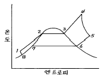
- 경로 4-5는 가역, 단열과정으로 나타난다.
- 경로 1-2-3-4는 물이 끓는점 이하로 보일러에 들어가 증발하면서 가열되는 과정이다.
- 경로 1-2-3-4는 다른 과정에 비하여 압력 변화가 적으므로 정압과정으로 볼수 있다.
- 경로 4-5는 보일러에서 나가는 고온 수증기의 에너지 일부가 터어빈 또는 수증기 기관으로 들어가는 과정이다.
(정답률: 31%)
40. -10℃ 와 20℃ 사이에서 작동하는 카르노 냉동 사이클의 성능계수(COP)는?
- 6.75
- 7.76
- 8.77
- 9.78
(정답률: 59%)
3과목: 가스설비
41. 저압배관의 내경을 5cm 에서 2cm 로 변화시키면 압력손실은 몇 배로 되는가?
- 97.7
- 39.1
- 6.3
- 15.6
(정답률: 알수없음)
42. 가스와 공기의 열전도도가 다른 특성을 이용하는 가스 검지기는?
- 서머스태트식 가스검지기
- 적외선식 가스검지기
- 수소염 이온화식 가스검지기
- 접촉연소식 가스검지기
(정답률: 알수없음)
43. 저온장치에서 냉매로 사용되는 것으로만 짝지어진 것은?
- 수소, 암모니아, 프레온
- 프로판, 에틸렌, 일산화탄소
- 이산화탄소, 질소, 암모니아
- 프레온, 아산화질소, 암모니아
(정답률: 47%)
44. LP가스 수입기지 플랜트를 기능적으로 구별한 설비시스템에서 저온저장 설비에 해당하는 것은?
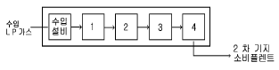
- 1
- 2
- 3
- 4
(정답률: 알수없음)
45. 다단 압축을 하는 목적으로 옳은 것은?
- 압축일과 체적효율의 증가
- 압축일 증가와 체적효율 감소
- 압축일 감소와 체적효율 증가
- 압축일과 체적효율의 감소
(정답률: 67%)
46. 도시가스의 연소성을 측정하기 위하여 웨베지수를 구하는 데 웨베지수는 표준 웨베지수의 얼마 이내를 유지해야 하는가?
- ± 4%
- ± 4.5%
- ± 5%
- ± 5.5%
(정답률: 알수없음)
47. 고압가스의 분출시 정전기가 가장 발생하기 쉬운 경우는?
- 다성분의 혼합가스인 경우
- 가스의 분자량이 작은 경우
- 가스가 많이 건조해 있을 경우
- 가스중에 액체나 고체의 미립자가 섞여있는 경우
(정답률: 59%)
48. 압력 10[kgf/cm2], 온도 200[℃]에서 포화수의 엔탈피가 200[kcal/kg], 포화증기의 엔탈피가 300[kcal/kg]이다. 같은 온도에서 건조도가 0.9 인 습증기의 엔탈피는?
- 290[kcal/kg]
- 300[kcal/kg]
- 310[kcal/kg]
- 320[kcal/kg]
(정답률: 알수없음)
49. 압력계에 눈금을 표시하기 위해서 다음 그림과 같은 장치를 설치하였다. 이 때 표시압력(P)으로서 계산된 것은?(단, A1 = 피스톤의 단면적, A2 = 추의 단면적, W1 = 추의 무게, W2 = 피스톤의 무게,PA = 대기압이고 마찰 및 피스톤의 변경오차는 무시된다.)
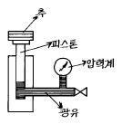
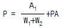
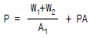
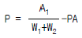
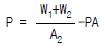
(정답률: 67%)
50. CH4 성분이 많은 열량 6,500[kcal/Nm3] 정도의 가스를 제조하는 방법으로 적당한 것은?
- 사이크링식 접촉 분해 공정
- 고온 수증기 개질 공정
- 저온 수증기 개질 공정
- 부분 연소 공정
(정답률: 알수없음)
51. 공기액화장치에 아세틸렌 가스가 혼입되면 안되는 이유로 옳은 것은?
- 산소의 순도가 저하
- 파이프 내부가 동결되어 막힘
- 질소와 산소의 분리작용에 방해
- 응고되어 있다가 구리와 접촉하여 산소중에서 폭발
(정답률: 알수없음)
52. 조정기(Regulator)에 대한 설명으로 옳지 않은 것은?
- 1단 감압식 조정기는 각 연소 기구에 맞는 압력으로 공급이 가능하다.
- 2단 감압식 조정기는 입상배관에 의한 압력 강하를 보정할 수 있다.
- 2단 감압방식은 공급 압력이 안정적이지만 재액화의 문제가 따른다.
- 자동 교체식 조정기는 전체 용기 수량이 수동 교체식의 경우보다 적어도 된다.
(정답률: 50%)
53. 원료의 도시가스화에 응용되는 수증기 개질공정에서 사용되는 촉매는 어느 계통 인가?
- 철계통
- 니켈계통
- 구리계통
- 비금속계통
(정답률: 62%)
54. 전양정이 30m, 송출량이 1.5m3/min, 효율이 72% 인 펌프의 축동력은 몇 ㎾ 인가?
- 7.4kW
- 7.7kW
- 9.4kW
- 10.2kW
(정답률: 알수없음)
55. 공기액화 분리장치의 폭발 방지대책으로 옳지 않은 것은?
- 장치내에 여과기를 설치한다.
- 유분리기는 설치해서는 안된다.
- 흡입구 부근에서 아세틸렌 용접은 하지 않는다.
- 압축기의 윤활유는 양질유를 사용한다.
(정답률: 62%)
56. 다음 그림과 같은 펌프에 해당하는 것은?
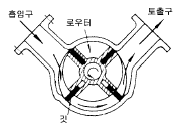
- 치차펌프
- 베인펌프
- 플런저펌프
- 웨스코펌프
(정답률: 90%)
57. 이상적인 냉동사이클의 기본 사이클은?
- 카르노 사이클
- 랭킨 사이클
- 역카르노 사이클
- 브레이튼 사이클
(정답률: 알수없음)
58. 에틸렌, 프로필렌, 부틸렌과 같은 LP가스의 분류와 화학적 안정성이 바르게 연결된 것은?
- 파라핀계 - 안정
- 올레핀계 - 불안정
- 파라핀계 - 불안정
- 올레핀계 - 안정
(정답률: 알수없음)
59. 냉동기의 냉동능력을 바르게 나타낸 것은?
- 1시간에 냉동기가 흡수하는 열량 [kcal/h]
- 1m3 의 공간을 냉동기가 흡수하는 열량 [kcal/m3]
- 냉매 1kg 이 흡수하는 열량 [kcal/kg]
- 냉매 1kg 로 냉각할 수 있는 공간 [m3/kg]
(정답률: 55%)
60. 나프타(Naphtha)에 대한 설명으로 옳지 않은 것은?
- 원유의 상압증류에서 비점이 200℃ 이하의 유분을 뜻한다.
- 고비점 유분 및 황분이 많은 것은 바람직하지 않다.
- 비점이 130℃ 이하인 것을 보통 경질나프타라 한다.
- 가스화 효율이 좋으려면 올레핀계 탄화수소량이 많은 것이 좋다.
(정답률: 73%)
4과목: 가스안전관리
61. 고압가스 설비의 고압배관이 상용압력 0.5MPa 일 때 기밀 시험 압력은 얼마 이상이어야 하는가?
- 0.75MPa 이상
- 0.5MPa 이상
- 0.55MPa 이상
- 1.0MPa 이상
(정답률: 63%)
62. 액화가스의 정의에 대하여 바르게 설명한 것은?
- 대기압에서의 비점이 섭씨 0도 이하인 것
- 대기압에서의 비점이 상용의 온도 이상인 것
- 가압, 냉각 등의 방법으로 액체상태로 되어 있는 것
- 일정한 압력으로 압축되어 있는 것
(정답률: 알수없음)
63. LPG 용기 저장에 관한 내용으로 옳지 않은 것은?
- 용기보관실 주위의 2m(우회거리)이내에는 인화성 물질을 두지 않는다.
- 충전용기는 항상 40℃ 이하를 유지하여야 한다.
- 전기스위치는 용기보관실 내부에 설치하여야 한다.
- 내용적 30L미만의 용접용기는 2단으로 쌓을 수 있다.
(정답률: 75%)
64. 액화석유 가스의 저장실 통풍구조에 관한 설명으로 옳지 않은 것은?
- 강제 통풍장치 배기가스 방출구는 지면에서 3m 이상 높이에 설치해야 한다.
- 강제 통풍장치 흡입구는 바닥면 가까이에 설치해야한다.
- 환기구의 가능 통풍면적은 바닥면적 1m2 당 300㎝2 이상이어야 한다.
- 저장실을 방호벽으로 설치할 경우는 환기구를 2개 방향이상으로 설치해야 한다.
(정답률: 30%)
65. 시안화수소에 대한 설명으로 옳은 것은?
- 가연성, 독성가스이다.
- 인체에 대한 강한 마취 작용을 나타낸다.
- 공기보다 아주 무거워 아랫쪽에 채류하기 쉽다.
- 가스의 색깔은 연한 황색이다.
(정답률: 58%)
66. 일산화탄소가 누출되고 있다면 그 탐지를 위한 가스검지법은?
- 염화파라듐지
- 하리슨씨시약
- 요드화칼륨전분지
- 초산연지
(정답률: 84%)
67. 사람이 사망한 사고 발생 시 도시가스사업자는 한국가스 안전공사에 사고발생 후 얼마 이내에 서면으로 통보하면 되는가?
- 즉시
- 7일 이내
- 10일 이내
- 20일 이내
(정답률: 24%)
68. 상용압력이 6MPa 의 고압설비에서 안전밸브의 작동 압력은?
- 6.0 MPa
- 4.8 MPa
- 9.0 MPa
- 7.2 MPa
(정답률: 50%)
69. 고압가스 용기의 내압시험방법 중 팽창측정시험의 경우 용기가 완전히 팽창한후 적어도 얼마 이상의 시간을 유지해야 하는가?
- 30초
- 45초
- 1분
- 5분
(정답률: 64%)
70. 어떤 고압가스의 폭발상한계는 수소에 가깝고 폭발하한계는 암모니아에 가깝다. 이 가스는?
- 에탄
- 산화프로필렌
- 일산화탄소
- 메틸아민
(정답률: 46%)
71. 다음 중 염소와 동일차량에 적재하여 운반 가능한 것은?
- 산소
- 암모니아
- 수소
- 아세틸렌
(정답률: 91%)
72. 도시가스의 총 발열량이 10,000 ㎉/m3, 도시가스의 공기에 대한 비중이 0.66 일 때 이 가스의 웨베지수는?
- 16,100
- 12,309
- 10,620
- 6,600
(정답률: 74%)
73. 가스운반 전용차량은 충전용기 최대높이의 ( )이상까지 ( ) 또는 이와 동등이상의 강도를 갖는 재질로 적재함을 보강하여 용기고정이 용이하도록 하여야 한다. ( )에 알맞는 것은?
- 1/3, SS 200
- 1/2, SPPS 200
- 2/3, SS 400
- 3/4, SPPS 400
(정답률: 34%)
74. 공정에 존재하는 위험요소들과 공정의 효율을 떨어뜨릴 수 있는 운전상의 문제점을 찾아낼 수 있는 정성적인 위험평가 기법으로 산업체(화학공장)에서 가장 일반적으로 사용되는 것은?
- Check list법
- FTA법
- ETA법
- HAZOP법
(정답률: 알수없음)
75. 에어졸 충전시 용기의 기준으로 옳지 않은 것은?
- 내용적 100cm3를 초과하는 용기의 재료는 강 또는 경금속을 사용할 것
- 용기는 50℃에서 용기안의 가스압력의 1.2배 압력을 가할 때 변형되지 아니할 것
- 유리제 용기는 합성수지로 그 내면 또는 외면을 피복한 것일 것
- 금속제 용기의 두께는 0.125mm 이상일 것
(정답률: 55%)
76. 일반적으로 압축가스가 충전된 용기를 차량으로 운반시 옆으로 뉘여서 적재하나 원칙적으로 세워서 적재하여야 하는 가스는?
- 산소
- 수소
- 질소
- 아세틸렌
(정답률: 54%)
77. 고압가스 제조설비에서 가스의 분출 또는 누출사고의 원인으로 가장 많이 발생하는 사고는?
- 저장탱크의 균열에 의한 누출
- 이음매 나사의 풀림에 의한 누출
- 이음매 패킹에서의 누출
- 액면계 유리의 파손에 의한 누출
(정답률: 60%)
78. 다음 중 가연성 가스이면서 독성가스인 것은?
- 산화에틸렌, 염화메탄, 황화수소
- 염소, 불소, 프로판
- 포스겐, 오존, 아황산가스
- 암모니아, 질소, 수소
(정답률: 65%)
79. 저장능력이 4톤인 액화석유가스 저장탱크 1 기와 산소탱크 1 기의 최대지름이 각각 4m, 2m 일 때 상호간의 최소 이격 거리는?
- 1m
- 1.5m
- 2m
- 2.5m
(정답률: 알수없음)
80. 고압가스 일반 제조시설의 가연성가스 또는 독성가스를 저장하는 저장능력 10,000리터의 저장탱크에 설치한 긴급차단장치는 그 저장탱크 외면으로부터 몇 미터 이상에서 조작할 수 있어야 하는가?
- 3m
- 5m
- 7m
- 10m
(정답률: 알수없음)
5과목: 가스계측기기
81. 가연성가스 중에 포함된 O2를 측정하는데 적당한 분석법은?
- 중량법
- 중화적정법
- 흡수법
- 완만연소법
(정답률: 57%)
82. 다음 제시한 자동제어의 일반적인 동작 순서를 바르게 나열한 것은?
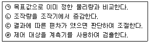
- ㉣ ㉠ ㉢ ㉡
- ㉣ ㉡ ㉠ ㉢
- ㉡ ㉠ ㉣ ㉢
- ㉡ ㉠ ㉢ ㉣
(정답률: 50%)
83. 탱크내의 기체압력을 측정하는데 수은을 넣은 U자관 압력계를 쓰고 있다. 대기압이 753mmHg 일 때 수은면의 차가 122㎜ 라면 탱크내의 기체의 절대압은? (단, 수은의 비중량은 13.6gf/㎝3 이다.)
- 0.166㎏f/㎝2
- 0.215㎏f/㎝2
- 1.19㎏f/㎝2
- 2.45㎏f/㎝2
(정답률: 알수없음)
84. 휴대용으로 사용되며 상온에서 비교적 정도가 좋으나 물이 필요한 습도계는?
- 모발 습도계
- 광전관식 노점계
- 통풍형 건습구 습도계
- 저항온도계식 건습구 습도계
(정답률: 37%)
85. KI-전분지의 검지가스와 변색반응 색깔이 올바르게 연결된 것은?
- 할로겐 - [청∼갈색]
- 아세틸렌 - [적갈색]
- 일산화탄소 - [청∼갈색]
- 시안화수소 - [적갈색]
(정답률: 82%)
86. 다음 온도계측기 중 비접촉식으로만 짝지어 진 것은?
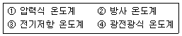
- ①, ③
- ②, ④
- ①, ②
- ③, ④
(정답률: 80%)
87. 가스크로마토그램의 분석 결과 노르말햅탄의 피크높이가 12.0cm, 반높이선나비가 0.48cm 이고 벤젠의 피크높이가 9.0cm, 반높이선나비가 0.62cm 였다면 노르말햅탄의 농도는 얼마인가?
- 49.20 %
- 50.79 %
- 56.47 %
- 77.42 %
(정답률: 70%)
88. 헴펠식 가스분석법에서 수소나 메탄은 어떤 방법으로 성분을 분석하는가?
- 흡수법
- 연소법
- 분해법
- 증류법
(정답률: 알수없음)
89. 다이어프램식 가스미터에 표기된 주기체적의 공칭값과 실제값과의 차이는 기준조건에서 얼마 이내이어야 하는가?
- 1%
- 2%
- 3%
- 5%
(정답률: 36%)
90. 절대습도(Absolute humidity)를 바르게 나타낸 것은?
- 습공기 중에 함유되어 있는 건공기 1[kg]에 대한 수증기의 중량
- 습공기 중에 함유되어 있는 건공기 1[m3]에 대한 수증기의 중량
- 습공기 중에 함유되어 있는 건공기 1[kg]에 대한 수증기의 체적
- 습공기 중에 함유되어 있는 습공기 1[m3]에 대한 수증기의 체적
(정답률: 70%)
91. 차압식 유량계에서 유량과 압력차와의 관계는?
- 차압에 비례 한다.
- 차압의 제곱에 비례 한다.
- 차압의 제곱근에 비례 한다.
- 차압의 5승에 비례 한다.
(정답률: 알수없음)
92. 압력 5kgf/cm2· abs, 온도 40℃ 인 산소의 밀도(kg/m3)는?
- 2.03
- 4.03
- 6.03
- 8.03
(정답률: 67%)
93. 가연성가스 누설검지 경보장치 지시계의 눈금범위로 옳은 것은?
- 0∼폭발하한계
- 0∼폭발상한계
- 폭발범위(연소범위)
- 0∼허용농도
(정답률: 50%)
94. 구경이 40mm 이하인 액화석유가스미터(Gas meter)에 대한 표시 사항이 아닌 것은?
- 사용 최대유량
- 계량실 출구의 구경
- 제작기호
- 최저 작동압력
(정답률: 0%)
95. 목표값이 미리 정해진 계측에 따라 시간적 변화를 할 경우 목표값에 따라 변하도록 하는 제어는?
- 정치제어
- 추종제어
- 케스케이드 제어
- 프로그램제어
(정답률: 91%)
96. 막식가스미터에서 지시장치의 gear 불량 등으로 가스미터의 지침에 회전이 전달되지 않아 일어나는 고장 형태는?
- 부동
- 불통
- 누출
- 감도불량
(정답률: 알수없음)
97. 제어편차에 따라 일정한 신호를 조작 요소에 보내는 장치는?
- 조절기
- 계측기
- 전송기
- 검출기
(정답률: 39%)
98. 다음 가스미터 중 실측식으로만 짝지은 것은?
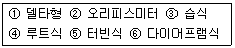
- ③,⑤,⑥
- ①,④,⑥
- ③,④,⑥
- ①,③,⑤
(정답률: 75%)
99. 편차의 크기와 편차가 생기고 있는 시간으로 둘러싸인 면적, 즉 적분값의 크기에 비례하여 조작부를 움직이게 하는 동작은?
- PI 동작
- P 동작
- PD 동작
- PID 동작
(정답률: 70%)
100. 오리피스식 유량계에 대한 설명으로 옳지 않은 것은?
- 구조가 간단하여 많이 사용 된다.
- 압력손실이 크다.
- 관의 곡선부에 설치하여도 정도가 높다.
- 고압에 적당하다.
(정답률: 85%)